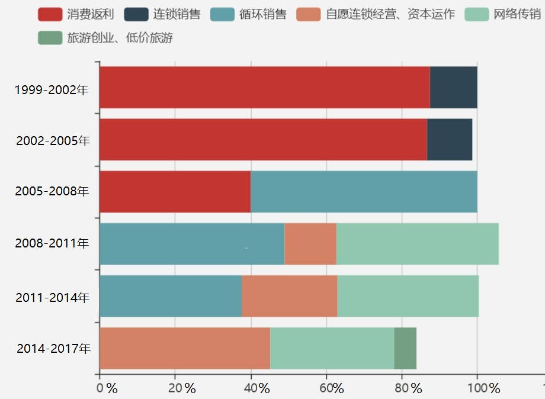
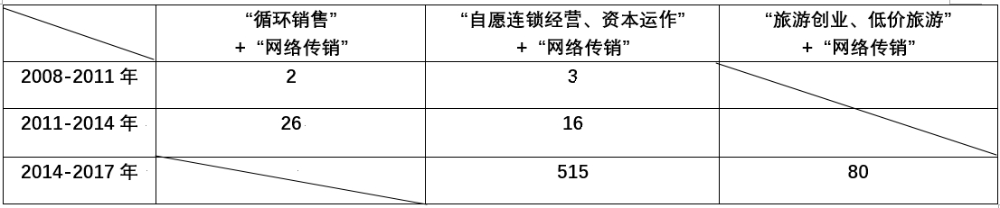

首个传销“根据地”为河南
华中、华东、华南是“重灾区”
1999-2016年全国各地传销案件判决数量
（单位：件）数据来源：中国裁判文书网、Openlaw网

图一
整理法院裁决书中案发地域可以看出，2009年前传销组织涉及省份较分散，而从2009年起传销第一个“根据地”为河南省，随后各类传销组织在广西、广东、山东等沿海地区扎根发展。在经历2013年前后传销组织快速扩张后，华中、华东、华南等地成为近年来传销“重灾区”。
传销“马甲”从原始到多样
呈现“互联网+”趋势
1999-2016年传销组织最"流行”包装方式前三名
数据来源：中国裁判文书网、Openlaw网

图二
1999-2004年，传销组织多假借“消费返利”、“海外商品连锁销售”的名义发展下线；2005-2007年末，强调循环投资、消费分红的“循环消费”也成为主流，而这种方式直到2013年末都是传销组织最常用的欺骗手段。
从2008年起，“自愿连锁经营、资本运作”成为最“主流”的传销包装方式之一。传销团伙首脑往往谎称自己从事国家支持的重点，利用“拉人头、交会费”的方式实现快速的资本积累。与此同时，披上“电子商务”“网络营销”“股权投资”等“马甲”的“网络传销”也开始兴起，网站及各类社交网站已成为其发展的重要渠道，隐蔽性强、取证难更是加大了相关部门打击难度。
2008-2017年传销案件裁决书中
各类传销包装方法数量统计
（单位：件）数据来源：中国裁判文书网、Openlaw网
图三
近几年，为躲避相关部门打击，传销手段更多样。传销组织谎称“免费旅游”、“招聘”等方式诱骗受害人到传销窝点，欺骗受害者参与投资，拉人“入伙”享受分红。同时，假借“慈善”、“爱心捐助”、“消费养老”等传销方式也开始兴起。
值得注意的是，图二中2008-2011年三类“主流”包装方式占比相加大于100%，这是否意味着传销组织包装方式多元化的同时，也更加复合化呢？
2008-2017年“主流”传销包装“网络+”案件情况
（单位：件）数据来源：中国裁判文书网、Openlaw网

上图显示在2008-2017年传销裁决书中，各“主流”传销方式与“网络传销”的复合情况。可以看出，随着互联网的普及，越来越多的组织在网上进行传销活动，传销方式也呈现“互联网+”趋势。